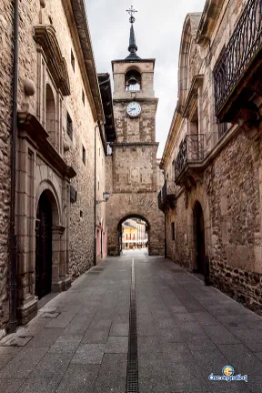
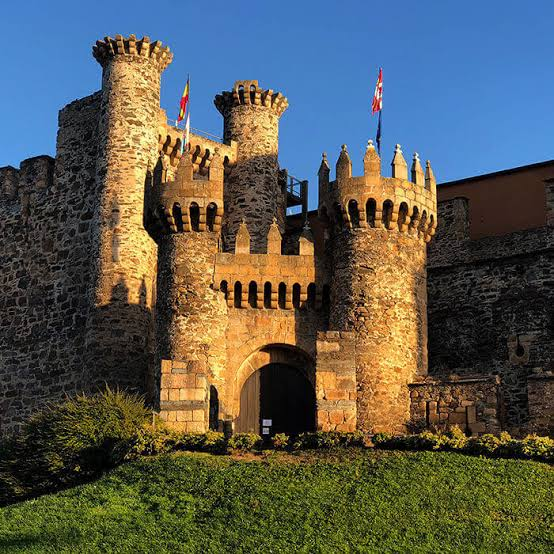
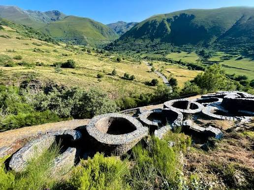
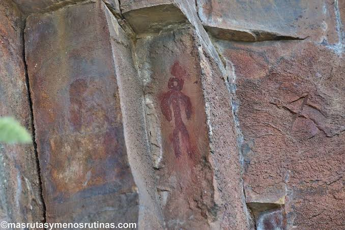
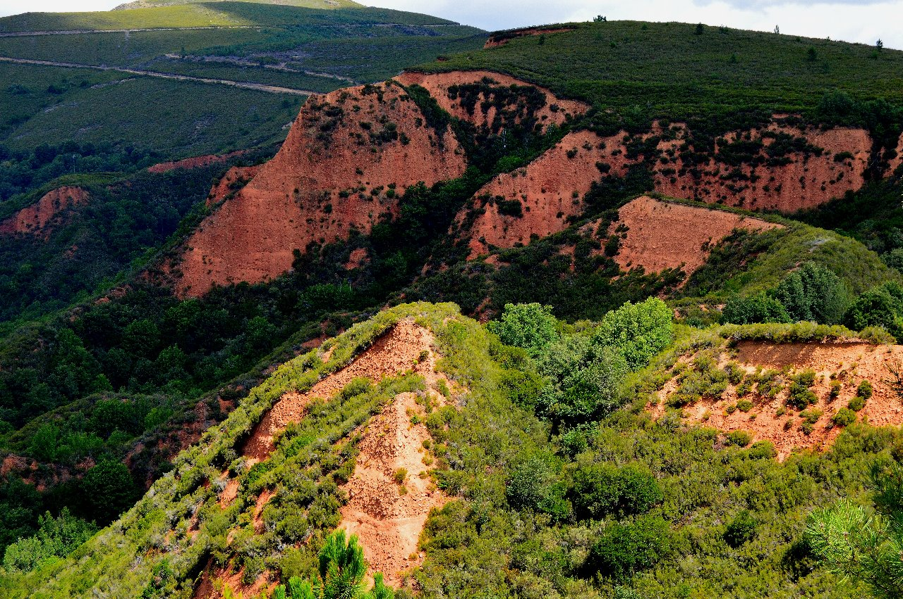

Lugares · ¿Qué Ver?
Patrimonio y naturaleza a tu alcance

Las Médulas
Paisaje excavado por los romanos. Montañas de tierra roja que crean un espectáculo visual único. A 1 hora.

Casco Antiguo de Ponferrada
Centro histórico medieval. Calles empedradas, iglesias románicas y arquitectura tradicional berciana. A 50 min.

Castillo de los Templarios
Fortaleza medieval emblema de Ponferrada. Visitas, museos y vistas espectaculares de la comarca. A 50 minutos.

Castro de Chano
Yacimiento arqueológico celta. Ruinas de un antiguo poblado en la montaña. A 35 minutos.

Pinturas Rupestres de Piñera
Arte esquemático de la Prehistoria. Figuras ancestrales en roca. Ruta de senderismo a 25 minutos.

La Leitosa
Pico de montaña con vistas panorámicas. Ruta de senderismo de dificultad media. Vistas a toda la comarca.